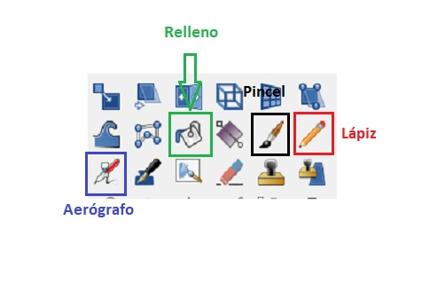

Herramientas de pintura
Las tres herramientas de pintura más importantes en GIMP son el pincel, el lápiz y el aerógrafo. Aunque cada una tiene sus particularidades, comparten también muchas opciones.

Vamos a aprender a usar la herramienta pincel, que nos permite dibujar a mano alzada (utilizando el puntero del ratón o el touchpad del ordenador portátil) con diferentes tipos/formas de pincel y eligiendo previamente el color a utilizar, para lo cual también hay que conocer la paleta de colores.
El pincel dispone de muchas opciones de configuración, aunque las más usadas son la forma del pincel, el tamaño del pincel, la opacidad y el "modo" del pincel.
Explicación de la herramienta pincel en la documentación de GIMP.